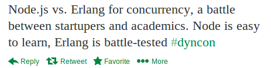
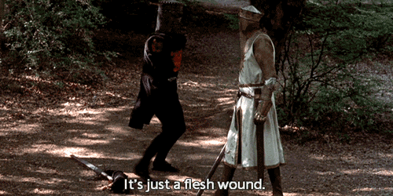
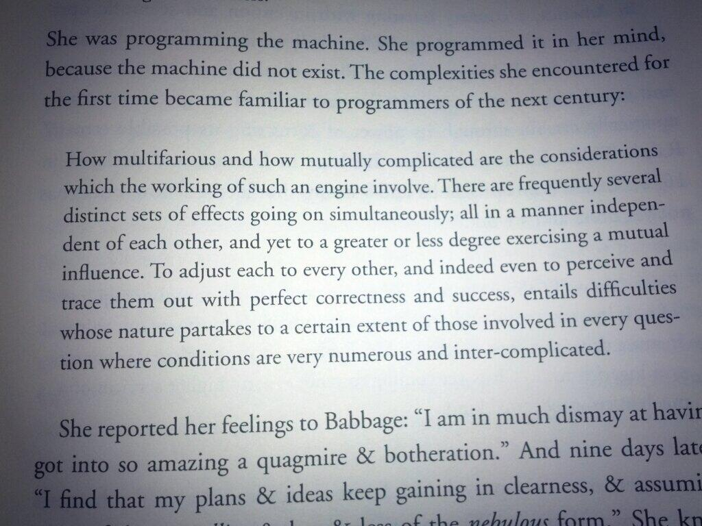

Credits Already??
- This OTP Life (http://thisotplife.tumblr.com/)
- Learn You Some Erlang (http://learnyousomeerlang.com/)
Handles!
- Github: tsloughter
- Twitter: @t_sloughter
- Email: tristan@heroku.com

Who Am I?
- Heroku routing infastructure engineer
- HTTP Request Routing
- Logging (github.com/heroku/logplex)
Outline
- Erlang
- Fault Tolerance
- It's OK to Crash?
- Unique Erlang Characteristics
- OTP
Real World?

History
- Ericsson looking for best language for telecom systems
- Concurrency and error recovery at top of the list
- Lisp, Prolog, Parlog considered, but ruled out
- Joe creates Erlang in 1986, language with concurrency and error recovery built in
- Joe's thesis mentions 9 9's for AXD301
Erlang's Focused on Features
- Concurrency
- Distribution
- Actors
- Green Threads
Without Error Recovery
Fault Tolerance Compared
Erlang  Copycats
Copycats
Fault Tolerance in Routing
- Many components can go wrong (bad request, bad response, missing dyno, missing records, overloaded, ...)
- Degradation better than no response
Fault Tolerance in Logging
- Similar to routing issues
- Better delayed than lost
- Better some than none
- And better to inform of missing logs then them simply not be there
Who Are You?
- Engineers
- Novice or no Erlang experience
What is Fault Tolerance?
Ability to keep working to a level of satisfaction in the presence of failure
Isolation

Graceful Degradation

What is Let It Crash?
Why it Matters
- You'll never test every scenario (though QuickCheck/PropEr help)
- You don't want your system to go down!
- Defensive coding sucks
- Prepares you for the quick recovery from the unexpected
- And most important...
It Will Catch on Fire!

What's a Crash?
- A process crash
- No longer exists, all state lost
Erlang's Best Unknown Feature
- Language comparisons to Erlang leave it out (except Akka)
- Can't be duplicated on existing VMs
- But why?
Erlang Isolation
- Immutable
- Cheap process spawning
- Message passing
- Process monitoring and linking
Immutable

Ada Lovelace

Message Passing
- No Shared State
Lightweight Processes
- Key to isolation, message passing and supervising
Monitor
- Unidirectional
Link
- Bidirectional
Link

Erlang Graceful Degradation
- Cheap process spawning
- Preemptive scheduling
- Concurrent garbage collection
Garbage Collection
- Concurrent
Erlang Middleware
- OTP: gen_server, supervisors, etc.
OTP: The J2EE of Erlang?

Server Common Pattern

Supervisors

One for All

One for One

Rest for One

Init State
- All process state is lost on crash
- Safe state to restart from
- Able to start accepting messages again from a error-free state
Pull it All Together
*
Back to Industry
*
References
- LYSE : http://learnyousomeerlang.com/
- OTP in Action: http://www.manning.com/logan/
- Erlang Central : http://erlangcentral.org/